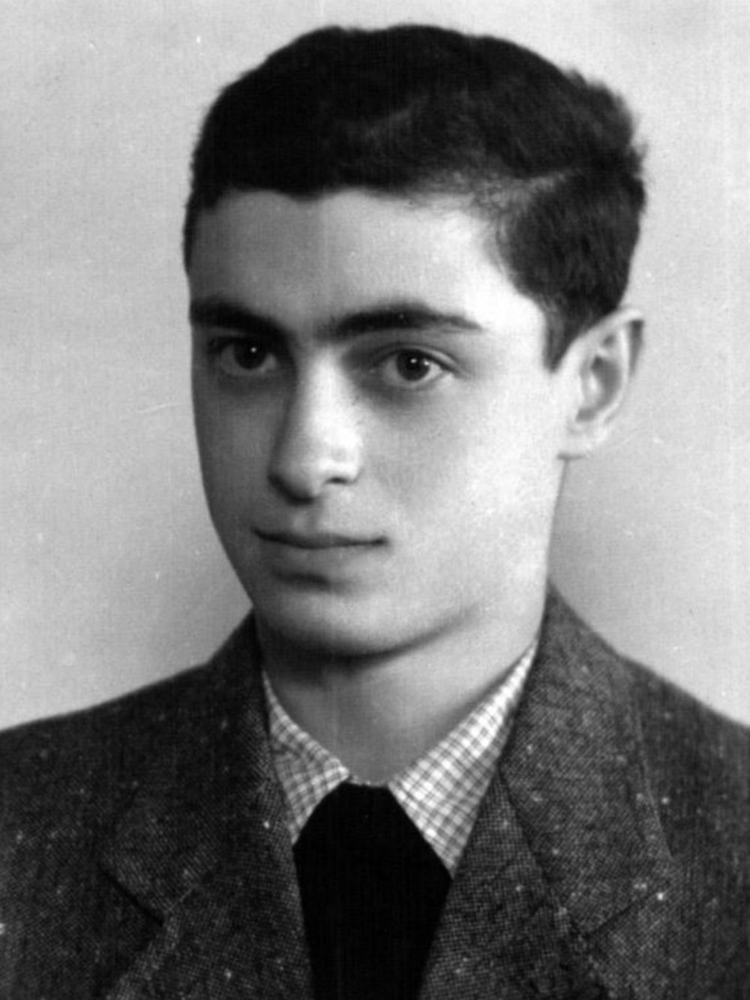

Portrait d’archive
Benno Kern (S)
Benno KERN
Benno KERN est né le 18/07/1927 à Vienne en Autriche.
Rassemblé à Vénissieux, il est déporté avec ses parents à Auschwitz le 02/09/1942 par le convoi n°27. Il est le seul survivant.
Dernière adresse connue : Camp de Vénissieux
Nom : KERN
Prénom(s) : Benno
Date naissance : 18/07/1927
Âge (ans) : 15
Lieu naissance : Vienne
Pays ou département : Autriche
Lieu rassemblement : Vénissieux
Dernière adresse :
Ville : Vénissieux
Code postal : 69200
N° Convoi : 27
Date déportation : 02/09/1942
Informations diverses : Benno est le fils de Klara KERN (née BERGLAS le 27/08/1906 à Korczyna, Pologne) et de Samuel KERN (10/04/1899 à Kolomyya, Ukraine). Benno est né à Vienne en 1927. Il a connu les pogroms de novembre et la destruction de son école à Vienne à l'âge de onze ans. En 1938, sa famille s'enfuit à Anvers, puis via Bruxelles vers la France. Il a été arrêté à Lyon avec ses parents, Klara et Samuel, pendant la grande rafle des Juifs « apatrides » de la zone libre. Rassemblés au camp de Vénissieux, tous trois ont été transférés à Drancy et déportés à Auschwitz par le convoi n° 27 du 2 septembre 1942. Benno sera transféré d’Auschwitz aux camps de Gross-Rosen, Mauthausen et Buchenwald. En avril 1945, Benno Kern revint comme seul survivant vivant de sa famille.
Benno retournera à Vienne et devint président de l'association Adass Jisroel – Schiffschul et président du Fonds de reconstruction de la synagogue Schiffschul.
Lieu de déportation : Auschwitz
Lieu de départ : Drancy
Nombre total de déporté·e·s du convoi : 1000
Gazé·e·s à l'arrivée :
Survivant·e·s en 1945 :